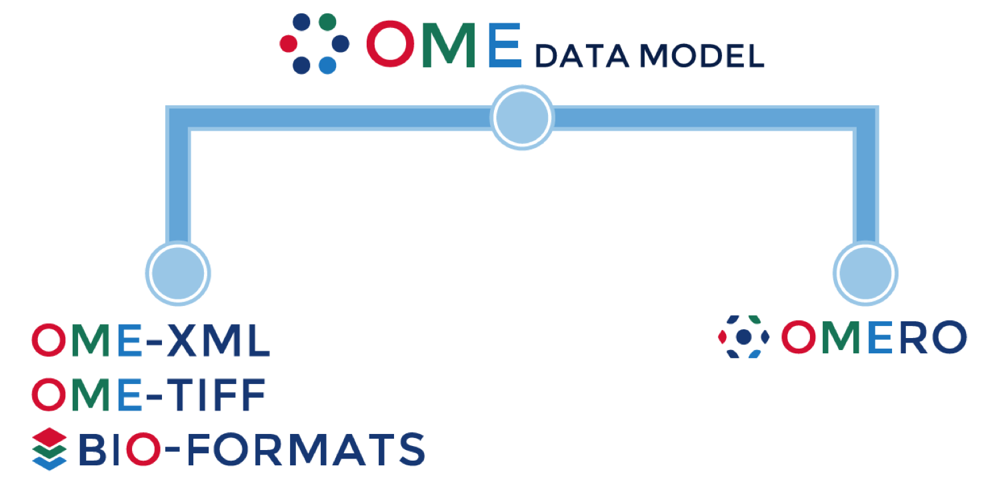

OME and OMERO
ImageJ conference, Madison 2015
Petr Walczysko
Outline
- History
- Data workflow
- What's OME
- What's OMERO
- OMERO and ImageJ
- Questions
Brief overview
- Founded in 2000
- Funded by Wellcome Trust, BBSRC, EPSRC, NIH
- 2014 Creation of a multi-development sites consortium
- Open Source (mainly under GPL)
- Commercial part: Glencoe Software created Nov 2005
The Standard paradigm
The Scientific Data paradigm
OME: What We Do
OMERO: an Extensible platform
-->OMERO and ImageJ
OMERO and ImageJ,...: Next steps
- Java gateway (available in v5.2)
- Re-usable UI components
- Continue Server side integration (Started by C. Rueden)
Thank you
- OME Consortium